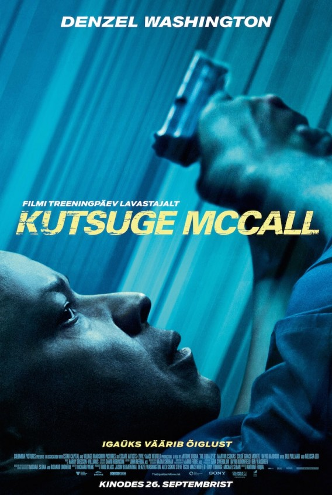

You gotta be who you are in this world, no matter what.
Märulis "Kutsuge McCall" kehastab Denzel Washington endist eriüksuslast McCalli, kes lavastas oma surma ja elab nüüd tagasihoidlikult Bostonis.
Mõnusat pensionipõlve ei saa ta nautida kaua, kui peab päästma noore tüdruku Teri (Chloë Grace Moretz) ja seisma silmitsi julmade vene gangsteritega.
Abitute rõhumine tuletab McCallile meelde, kuidas ta õigluse jaluleseadmise eest seisis. Kui kellelgi on kitsas käes ning abi pole loota, tuleb appi just nimelt McCall.
| Eelarve | $55,000,000.00 |
|---|---|
| Kasum | $192,330,738.00 |